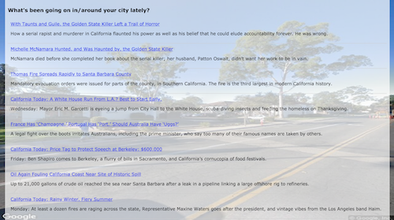

This Move Planner app works using AJAX requests to query external APIs to fetch and display information about a place
that the user may want to know more about, like for instance, a new city that they want to move to. The user needs to
enter the complete address – the street, city and the state - in the form and once it is submitted the app displays the
Google street view image of the given address in the background, the geographical location of the address on the map,
the current weather information for the city, the list of relevant Wikipedia article titles with links to the full article
about the city and news articles about the city published in the recent past. For this purpose, it uses JQuery to manipulate
the DOM elements and query the Google Street View Image API, Google Maps Embed API, Wunderground weather API, MediaWiki API
and the New York Times Article API respectively using the information entered in the form, when it is submitted. The web app
is also fully responsive.
The above screenshots show how the app interface looks before and after the form submission for say, the city of Goleta, California, USA.
The scrolled down view is also shown, for both a large screen and a small mobile screen. This project was a part of the Udacity
course on AJAX.

